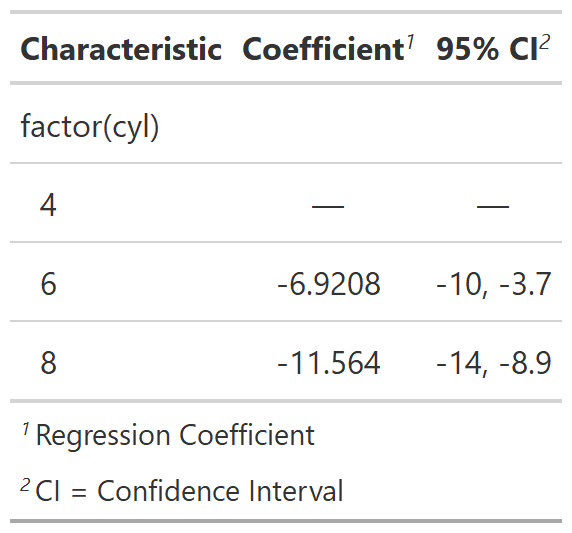

| modify_table_header {gtsummary} | R Documentation |
This is a function meant for advanced users to gain more control over the characteristics of the resulting gtsummary table.
modify_table_header( x, column, label = NULL, hide = NULL, align = NULL, missing_emdash = NULL, indent = NULL, text_interpret = NULL, bold = NULL, italic = NULL, fmt_fun = NULL, footnote_abbrev = NULL, footnote = NULL, spanning_header = NULL )
x |
gtsummary object |
column |
columns to update |
label |
string of column label |
hide |
logical indicating whether to hide column from output |
align |
string indicating alignment of column, must be one of
|
missing_emdash |
string that evaluates to logical identifying rows to
include em-dash for missing values, e.g. |
indent |
string that evaluates to logical identifying rows to indent |
text_interpret |
string, must be one of |
bold |
string that evaluates to logical identifying rows to bold |
italic |
string that evaluates to logical identifying rows to italicize |
fmt_fun |
function that formats the statistics in the column |
footnote_abbrev |
string with abbreviation definition, e.g.
|
footnote |
string with text for column footnote |
spanning_header |
string with text for spanning header |
Review the
gtsummary definition
vignette for information on .$table_header objects.
gtsummary object
Example 1

# Example 1 ----------------------------------
modify_table_header_ex1 <-
lm(mpg ~ factor(cyl), mtcars) %>%
tbl_regression() %>%
modify_table_header(column = estimate,
label = "**Coefficient**",
fmt_fun = function(x) style_sigfig(x, digits = 5),
footnote = "Regression Coefficient") %>%
modify_table_header(column = "p.value",
hide = TRUE)